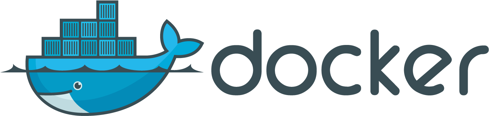
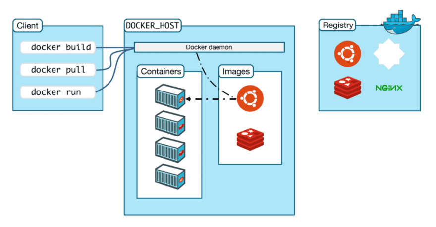
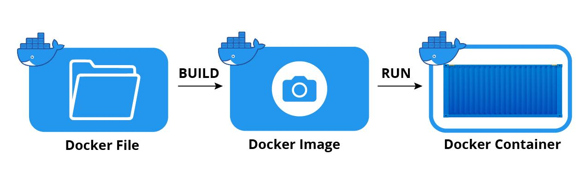

Introduction to

The contents of the slides have been stol..., umm,
liberally borrowed from pointful materials.
Thanks to everyone at Docker, Inc!
liberally borrowed from pointful materials.
Thanks to everyone at Docker, Inc!
The Challenge

The Matrix from Hell

Cargo Transport Pre-1960

Also a Matrix from Hell

Solution: Intermodal Shipping Container

Docker is a Container System for Code

Docker Eliminates the Matrix from Hell

Since it started in March 2013...
- >64k stars on Github
- >318B total pulls on Docker hub
- >7.3M Docker accounts
- >8.3M repositories on Docker hub
- 1000’s of Dockerized applications
- Memcached, Redis, Node.js, Hadoop...
- Integration in Jenkins, Travis, Chef, Puppet, Vagrant and OpenStack
- Meetups arranged around the world…
- with organizations like Ebay, Cloudflare, Yandex, and Rackspace presenting on their use of Docker
Why Developers Care
Build once... (finally) run anywhere*
- A clean, safe, hygienic, portable runtime environment for your app.
- No worries about missing dependencies, packages and other pain points during subsequent deployments.
- Run each app in its own isolated container, so you can run various versions of libraries and other dependencies for each app without worrying.
- Automate testing, integration, packaging...anything you can script.
- Reduce/eliminate concerns about compatibility on different platforms, either your own or your customers.
- Cheap, zero-penalty containers to deploy services. A VM without the overhead of a VM. Instant replay and reset of image snapshots.
* Where "anywhere" means an x86 server running a modern Linux kernel
(3.2+ generally or 2.6.32+ for RHEL 6.5+, Fedora, & related)
In Mac and Windows operating systems, Docker has managed to provision containers
on a micro Linux virtual machine.
(3.2+ generally or 2.6.32+ for RHEL 6.5+, Fedora, & related)
In Mac and Windows operating systems, Docker has managed to provision containers
on a micro Linux virtual machine.
Why Administrators Care
Configure once... run anything
- Make the entire lifecycle more efficient, consistent, and repeatable
- Increase the quality of code produced by developers.
- Eliminate inconsistencies between development, test, production, and customer environments.
- Support segregation of duties.
- Significantly improves the speed and reliability of continuous deployment and continuous integration systems.
- Because the containers are so lightweight, address significant performance, costs, deployment, and portability issues normally associated with VMs.
Why it Works: Separation of Concerns

More Technical Details
Why
- Run everywhere
- Regardless of kernel version
- Regardless of host distro
- Physical or virtual, cloud or not
- Container and host architecture must match...
- Run anything
- If it can run on the host, it can run in the container
- If it can run on a Linux kernel, it can run
What
- High level: a lightweight VM
- Own process space
- Own network interface
- Can run stuff as root
- Can have its own /sbin/init (different from host)
- <<machine container>>
- Low level: chroot on steroids
- Can also not have its own /sbin/init
- Container = isolated processes
- Share kernel with host
- No device emulation
- <<application container>>
VMs vs Containers

Why are Docker Containers Lightweight?

Docker Architecture

Three Important Terms

What are the Basics of a Docker System?

Changes and Updates

Demo Time
Let's Dockerize a Simple App*
from flask import Flask
app = Flask(__name__)
@app.route('/')
def hello_world():
return 'Hello from Docker!'
if __name__ == "__main__":
app.run(debug=True)
* Move down!
Dockerfile
FROM python:3.10-apline
WORKDIR /app
COPY requirements.txt requirements.txt
RUN pip3 install -r requirements.txt
COPY . .
CMD [ "python3", "-m" , "flask", "run", "--host=0.0.0.0"]
Building Docker Image
$ docker build -t hello-docker .
Creating a Container
$ docker run --rm -it -p 5000:5000 hello-docker
Ecosystem Support
- Operating systems
- Virtually any distribution with a 2.6.32+ kernel
- Red Hat/Docker collaboration to make work across RHEL 6.4+, Fedora, and other members of the family (2.6.32 +)
- CoreOS—Small core OS purpose built with Docker
- OpenStack
- Docker integration into NOVA (& compatibility with Glance, Horizon, etc.) accepted for Havana release
- Private PaaS
- OpenShift, Solum (Rackspace, OpenStack), Other TBA
- Public PaaS
- Deis, Voxoz, Cocaine (Yandex), Baidu PaaS
- Public IaaS
- Native support in Rackspace, Digital Ocean,+++
- AMI (or equivalent) available for AWS & other
- DevOps Tools
- Integrations with Chef, Puppet, Jenkins, Travis, Salt, Ansible +++
- Orchestration tools
- Mesos, Heat, ++
- Shipyard & others purpose built for Docker
- Applications
- 1000’s of Dockerized applications available at index.docker.io
Want to Learn More?
- www.docker.io
- Documentation
- Getting started (tutorial, installation, guide, etc)
- Introductory whitepaper
- Github: dotcloud/docker
- Google Group: docker-user
- Twitter: @docker
- Meetups: www.docker.io/meetups